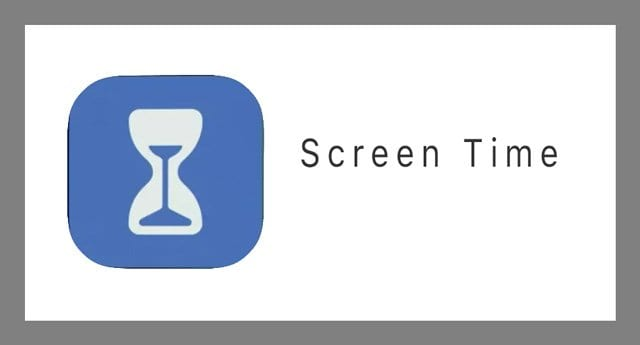

PROJECTS
VIRTUAL MOUSE
 This project promotes an approach for the Human Computer Interaction (HCI)
where cursor movement can be controlled using a real-time camera, it is an
alternative to the current methods including manual input of buttons or changing
the positions of a physical computer mouse. Instead, it utilizes a camera and
computer vision technology to control various mouse events and is capable of
performing every task that the physical computer mouse can.
Virtual Mouse is a advanced technique in this
technological world. Through which one can control the
gestures using their hands instead of an Physical mouse.
It reduce cost of hardware.
This project promotes an approach for the Human Computer Interaction (HCI)
where cursor movement can be controlled using a real-time camera, it is an
alternative to the current methods including manual input of buttons or changing
the positions of a physical computer mouse. Instead, it utilizes a camera and
computer vision technology to control various mouse events and is capable of
performing every task that the physical computer mouse can.
Virtual Mouse is a advanced technique in this
technological world. Through which one can control the
gestures using their hands instead of an Physical mouse.
It reduce cost of hardware.
SCREEN TIME CONTROLLER
Much of the research on screen time to date has focused on TV watching and the amount of time spent on screens. However, due to the high level of variation in current screen activities in relation to features, parental scaffolding opportunities, portability, and interactivity (e.g., tv, smartphones, tablets) it is no longer possible to consider the singular effect of all screen types on the developing child. Recent research in the field suggests that the quality of the content, parental engagement and monitoring, and the inclusion of interactive elements are all factors that influence the effect screen use has on early development, in addition to the amount of time spent on the screen.It is a digital well-being parental control app which is mainly designed for childrens.It turn off the screen after a particular period of time.For this application Eclipse software is used.